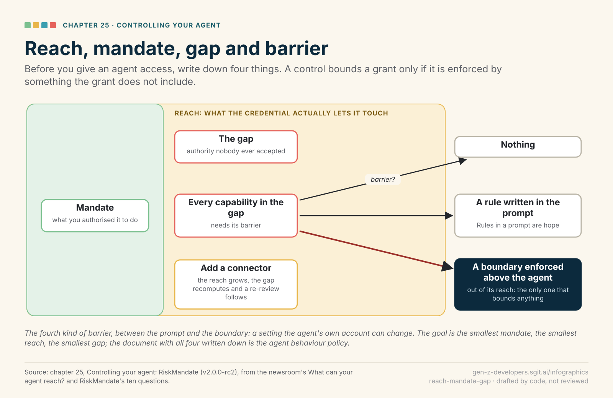

infographic · chapter · graph · drafted
Reach, mandate, gap and barrier
For ch. 25, Controlling your agent: RiskMandate · proposal reach-mandate-gap in the plan

The SVG The data Review it in the plan

What it is for
Readers valued this model above most in the book; drawn once it becomes the picture every later chapter (inbox, newsroom, desktop) can point back to.
How it is made
Drawn by admin/build/infographic_svg.py from admin/content/infographics/drawn/reach-mandate-gap.json, as a graph. Change the data and rebuild; the picture follows. It keeps the book's colours in every theme of this site, because it is a printed picture: the same file goes into the PDF.
Checked against the source
Every line below is on the drawing or behind it, and the build found each one word for word in v2/content/7-build-it-without-a-server/25__controlling-your-agent.md. A line changed in the chapter and not here stops the release.
- “A control bounds a grant only if it is enforced by something the grant does not include.” ✓
- “what the credential actually lets it touch” ✓
- “what you authorised it to do” ✓
- “authority nobody ever accepted” ✓
- “for every capability in the gap, the **barrier**: what actually stands in the way” ✓
- “nothing; a rule written in the prompt; a setting the agent's own account can change; and a boundary enforced above the agent, out of its reach” ✓
- “Rules in a prompt are hope” ✓
- “Add a connector and the reach grows, the gap recomputes and a re-review follows.” ✓